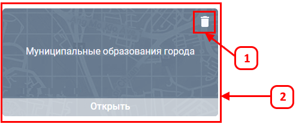
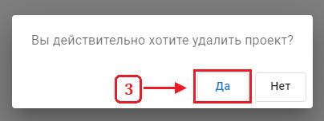

Управление проектами
Удаление проекта
Удаление проекта производится на странице «Проекты».
- Для удаления проекта наведите указатель мыши на подлежащий удалению проект.
-
Нажмите на иконку «Удалить проект».

-
Подтвердите удаление проекта.

Проект удален из списка.